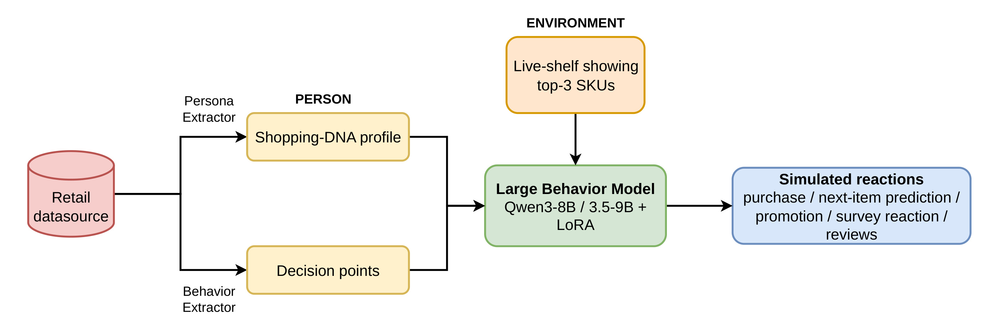
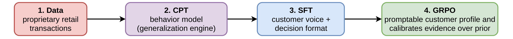
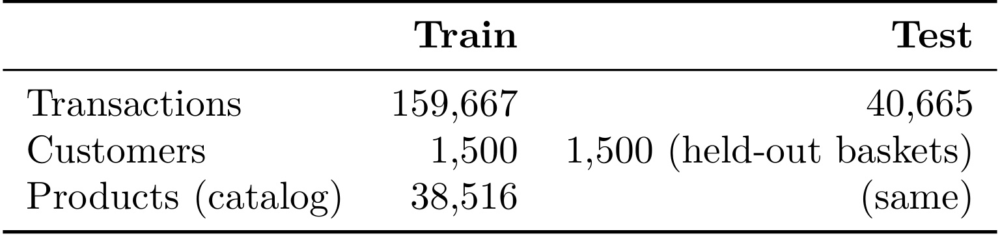
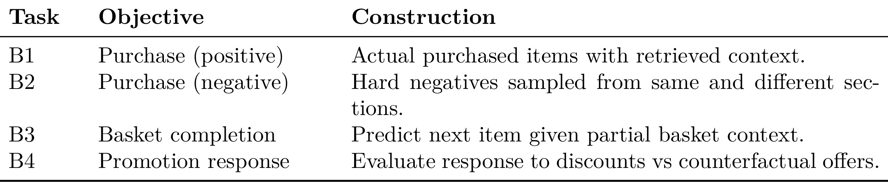
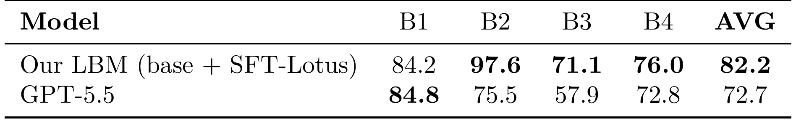
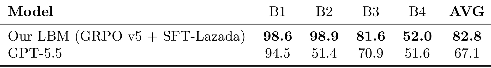
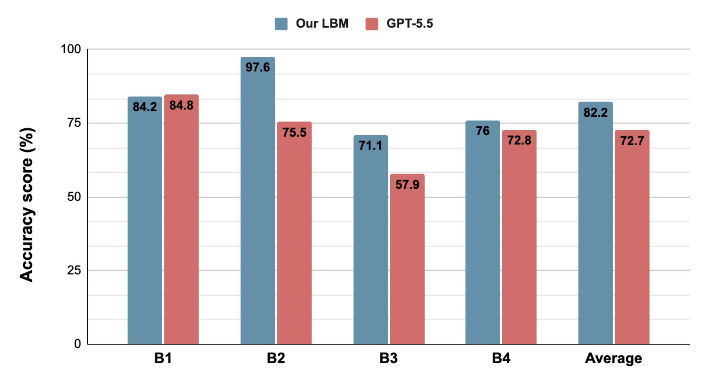
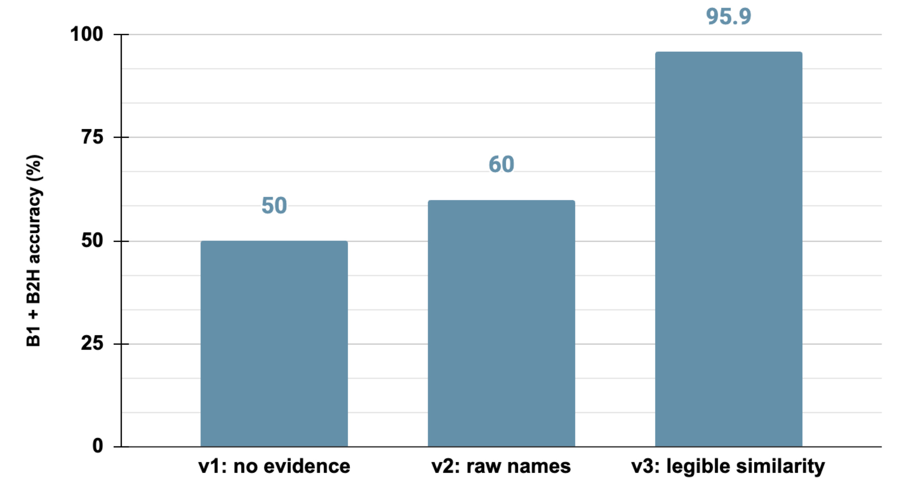
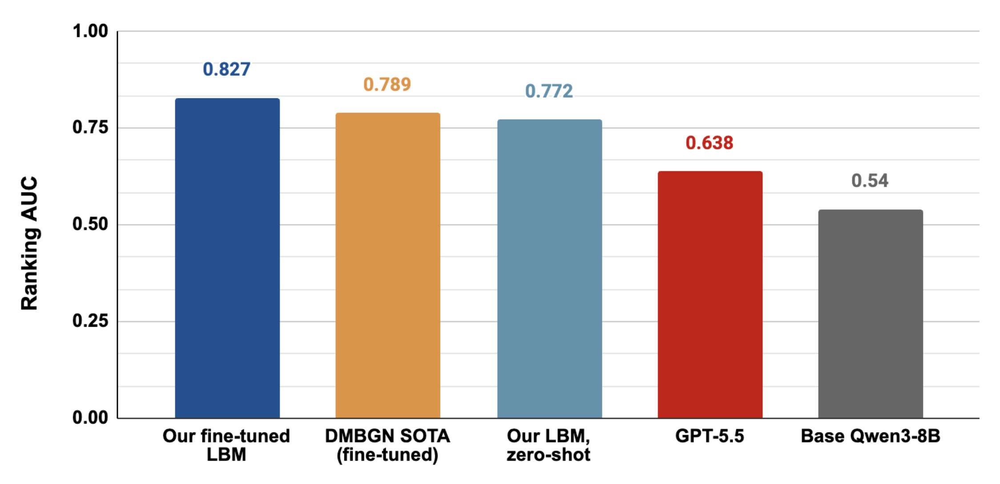

Large Behavior Model：零售客户行为的可提示数字孪生
这篇论文的英文题目是 Large Behavior Model: A Promptable Digital Twin of the Retail Customer，作者为 Wachiravit Modecrua、Krittin Pachtrachai 和 Touchapon Kraisingkorn，机构为 Amity Research and Application Center, Amity AI Holdings。论文入口为 arXiv:2607.06993，方向属于推荐算法、零售客户建模、digital twin、promptable behavior model 与营销决策支持的交叉。事实包显示本轮没有核验到独立公开代码入口，论文实验依赖零售交易数据，因此这篇笔记会把它当成一篇“方法和评测口径值得跟进、外部复现实操风险较高”的工作来读。
这篇论文的核心不是再做一个单任务推荐模型，而是尝试把客户长期交易历史、当下货架环境和语言模型的任务泛化能力放到同一套行为模拟框架里。作者把客户看成可被 prompt 重新实例化的 Person，把候选商品、价格、相似 SKU 和上下文看成 Environment，然后让同一个模型回答购买预测、篮子补全、促销响应、问卷/评论等不同问题。对推荐系统来说，它有两层价值：第一，它把“用户画像”从静态特征表推进到可解释的 Shopping-DNA 文本和轻量 adapter；第二，它把“推荐预测”扩展成“能不能在不同决策问题上模拟同一个客户”。
客户行为建模支撑推荐、营销与决策支持，但既有方法要么只追求预测准确率而难以解释决策，要么模拟用户时缺少真实行为数据约束；这篇论文追问的是：当语言模型被长期交易证据而不是通用模型先验所约束时，它能否成为忠实的个体消费者行为模拟器。
[toc]
1. 背景和问题
零售推荐和营销决策长期面临一个很实际的矛盾：企业手里有大量交易日志、商品目录、促销记录和客户分群，但真正需要决策时，问题往往不是“下一个商品是什么”这么单一。运营人员可能想知道某个客户会不会响应折扣，某个篮子里还缺什么，某个新品在某类客户中是否有吸引力，某个调研题如果发给不同消费习惯的人会得到什么反应。传统推荐模型通常能在一个明确目标上优化，例如 CTR、购买概率、下一物品预测或召回排序，但每换一个决策口径就可能需要新的标签、新的模型结构和新的特征工程。论文把这个局限称为 task-specific：模型擅长某个预测任务，却没有形成一个能跨问题复用的客户行为表示。
另一个方向是用大语言模型模拟用户。LLM 有自然语言推理和 prompt-following 能力，理论上可以让“客户画像 + 商品描述 + 问题”直接变成可交互的模拟器。但作者认为，很多已有 persona 模拟仍然过于依赖人口统计属性、手工构造 persona 或合成 profile。这样的模拟看起来会说话，也能生成理由，却未必被真实购买历史约束。对推荐系统来说，这个风险很大：模型可能根据通用常识说“年轻用户喜欢潮流商品”，或者根据训练语料里的营销话术生成听起来合理的答案，但这些答案不一定对应这个客户过去真实买过什么、在什么价位买、对促销是否敏感、是否重复购买、是否跨类目探索。
论文因此把问题从“推荐一个商品”改成“能否构造一个 promptable digital twin”。这里的 digital twin 不是科幻式的全量用户复制，而是一套可查询的客户行为函数：给定客户长期行为证据和当前候选环境，模型输出某个决策任务下的行为。它要求同时满足三件事。第一，客户状态要来自纵向交易证据，而不是只来自人群标签。第二，当下环境要可变，例如候选商品、相似商品、折扣信息和货架上下文可以在推理时被替换。第三，同一个底座模型要能通过 prompt 支持多种任务，而不是每个任务训练一个独立模型。
作者把这个思想连接到 Lewin 的场论，即行为来自 person 和 environment 的交互。放到推荐系统里，这句话很容易对应到用户长期偏好和请求上下文的交叉：用户长期爱买什么、价格敏感程度如何、促销反应如何，是 Person；这次看到的 SKU、价格、相似商品、篮子状态和优惠，是 Environment。传统深度推荐也在做用户特征和物品特征交叉，但多数时候交叉发生在向量空间里，解释性和任务迁移能力有限。LBM 的新尝试是把这些证据 verbalize 成语言模型能读的形式，再通过 LoRA、RAG 和训练阶段组合，让模型在自然语言空间里做行为推理。
这篇论文的工程背景也值得注意。作者使用的零售数据包含匿名交易记录、篮子、SKU 层级目录、价格和折扣信息，评估任务覆盖购买正例、硬负例、篮子补全和促销响应。也就是说，它不是只用公开推荐数据集做 next-item 排序，而是把“客户会不会买”“会不会在相似商品之间选对”“篮子里下一件是什么”“折扣是否改变选择”放到一组行为任务中。这样设计的优点是更贴近营销和推荐决策，缺点是依赖私有零售数据，外部读者很难完整复现。
从论文定位看，LBM 更像推荐系统和 LLM 用户模拟之间的桥。它不同于 HSTU、TIGER 这类强调序列建模和生成式召回的模型，也不同于只把 LLM 作为重排解释器的路线。它试图回答一个更基础的问题：如果把交易历史转成可读的 Shopping-DNA，把候选商品通过 RAG 注入 prompt，再用 continued pre-training、SFT 和 GRPO 逐步校准，那么语言模型是否能比通用 frontier LLM 更贴近真实客户行为。这个问题如果成立，后续可以服务于推荐实验前的用户模拟、促销策略筛选、虚拟市场调研和个性化解释；如果不成立，也能暴露 LLM persona 模拟在真实行为证据面前的天花板。
本文最需要警惕的地方也在这里：论文报告的模型和评测强依赖作者掌握的零售交易数据、商品目录和任务构造。我们可以学习它的建模拆法、训练阶段和评测问题，但不能把数值结论直接外推到所有零售场景，更不能把“digital twin”理解成已经能完整替代真实用户实验。更稳妥的读法是：这篇论文提供了一套把行为日志转成可提示行为模型的系统范式，并用多任务实验证明“显式行为证据”在若干零售决策任务上比通用 LLM 先验更有价值。
2. 方法
2.1 Person-Environment：把客户行为写成 B=f(P,E)
论文最核心的抽象是把行为写成 Person 和 Environment 的函数。作者在引言、系统总览和方法章多次使用同一个公式：
符号解释：B 表示客户在某个下游任务中的行为或决策，例如是否购买、篮子下一件商品、是否响应促销；P 表示客户的持久行为表示，来自长期交易历史、消费习惯、价格敏感度、类目偏好和购物节奏；E 表示当前决策环境，包括本次可见商品、相似 SKU、价格和折扣等上下文；f 是由语言模型承担的条件决策函数。这个公式的关键不是数学复杂，而是边界清晰：客户是谁和现在看到了什么被拆成两个可替换输入，模型本身不需要为每个客户永久记住所有信息。

Figure 1 展示了从交易数据到模拟决策的完整链路。左侧 retail datasource 先进入 Persona Extractor 和 Behavior Extractor，前者抽取相对稳定的人口统计、life stage 和消费画像，后者从真实交易中抽取 decision points，二者合成 Shopping-DNA profile。中间的 Large Behavior Model 使用 Qwen3-8B / 3.5-9B 加 LoRA 的形式承接客户状态，右上角 Environment 则由 live shelf 中 top-3 SKUs 这类检索结果构成。右侧输出不是单一推荐分数，而是 purchase、next-item prediction、promotion、survey reaction、reviews 等多种模拟反应。这个图说明 LBM 的目标是把交易日志整理成一个能被 prompt 驱动的行为接口，而不是把每个任务都训练成独立模型。
这张图里最重要的设计是 customer identity 不主要写进底座参数，而是通过 prompt 和 adapter 注入。这样做有两个实际好处。第一，新客户或稀疏客户不一定需要单独训练完整模型，可以用 segment-level adapter 加 Shopping-DNA profile 提供初始覆盖。第二，当环境变化时，例如候选商品、促销或相似商品替换，系统可以只更新 E，不必重训客户本身。对线上推荐系统来说，这相当于把长期用户状态和请求级上下文拆开管理，既保留长期偏好，又允许每次请求重新构造可解释证据。
2.2 Shopping-DNA 与 LoRA adapter：把历史交易变成可提示的客户状态
Customer representation 部分把 P 拆成两个组件：结构化行为 profile 和轻量行为 adapter。Shopping-DNA profile 是显式文本，来自训练期内的交易历史，包含 demographic 信息、life stage、价格敏感度、类目偏好、重复购买模式、篮子统计、时间购物习惯、渠道使用和促销亲和度。作者强调 evaluation period 的信息不能进入这个 profile，目的是避免未来泄漏。换句话说，Shopping-DNA 不是“看完答案后总结客户”，而是只用过去行为压缩出的可提示客户状态。
adapter 则承担更参数化的偏好吸收。论文比较 segment-level adapters 和 user-level adapters。segment-level adapters 按 life stage 或 retail persona 分组训练，好处是覆盖完整，包括冷启动或历史较少的客户；user-level adapters 为个体客户单独训练，在历史充足时可能更强，但通常需要 80 到 300 个行为样本，且无法自然泛化到稀疏或新客户。因此论文最终把 segment-level adaptation 作为主部署策略。这个选择很工程化：它牺牲了一部分极细粒度个体拟合，换来覆盖率、维护成本和线上可部署性。
这里可以把 LBM 和常规推荐里的用户 embedding 做一个对照。用户 embedding 往往是连续向量，服务于召回或排序打分，难以被业务人员直接审计。Shopping-DNA 则是可读的行为摘要，能被 prompt 组合、被人工检查，也能在不同任务中复用。LoRA adapter 则像一个轻量个性化层，把某类客户的行为模式沉淀到参数里。论文真正想要的是二者结合：profile 提供可解释的客户证据，adapter 提供语言模型内部的行为分布适配。 如果只有 profile，模型可能读到信息却不会稳定使用；如果只有 adapter，模型可能有效但难以解释和迁移。
2.3 RAG 环境：把当下货架作为决策上下文
Environment 部分由检索构造。论文把产品目录嵌入到 1,024 维向量空间，使用 ChromaDB 按 cosine similarity 检索 top-k 商品，通常 k = 3，然后把这些相似 SKU 注入模型 prompt。这个过程可以写成一个操作化公式：
符号解释：q 表示当前待判断商品或决策上下文，(\mathcal{C}) 是商品目录，h(\cdot) 是商品或查询的向量表示，(\operatorname{cos}) 表示余弦相似度，E(q) 是检索出的当前环境证据。论文没有把这个检索式作为编号公式给出，但 Section 3.3 和 Appendix A 明确说明使用 dense embedding、ChromaDB、cosine similarity 和 top-3 SKUs。它的含义是，环境不是模型凭空想象的，而是由当前商品目录中语义相近的候选构成。
RAG 在这里的角色和知识问答里的 RAG 不完全一样。知识问答中，RAG 通常用于补充外部事实；LBM 中，RAG 用于构造决策边界。客户要不要买 A，常常取决于 A 附近还有哪些替代品、价格如何、是否有折扣、是否属于同一 section。论文的消融结论也强调 retrieval 只有作为 decision context 才有效：在 supervised training 和 inference 中保留检索信息会提升预测准确率，但把 retrieval 插入 continued pre-training corpus 反而会损害表现。这个现象说明商品检索更像“本次问题的证据”，而不是应该被永久写进模型知识的长期事实。
对推荐工程来说，这一点很有启发。很多个性化系统会把用户长期兴趣和候选商品特征一起塞入模型，但很少把“当下候选之间的相似关系”转成可读证据交给一个统一行为模型。LBM 的 RAG 环境把候选 SKU 的语义邻居显式化，让模型在回答时看到“这个商品与客户历史或当前选择有什么可比对象”。如果没有这层环境证据，模型容易退回通用商品常识；如果环境证据太弱，B-hard 实验会显示准确率接近随机或只有有限提升。
2.4 CPT、SFT、GRPO：把通用语言模型推向行为模型
训练流程是论文方法的重心。作者把 LBM 训练成四阶段：行为数据收集、continued pre-training、supervised fine-tuning 和 GRPO reinforcement learning。每个阶段解决的不是同一个问题。数据收集提供真实交易历史；CPT 让通用语言模型接触 verbalized behavioral data，学习购买模式和行为共现；SFT 教模型按结构化格式输出决策和理由；GRPO 则用可验证 reward 校准模型，让它更依赖 prompt 中的显式行为证据，而不是通用语言模型先验。

Figure 2 把这四阶段压成一条很短的流程。第一阶段是 proprietary retail transactions，第二阶段是 CPT behavior model，也就是 generalization engine；第三阶段是 SFT customer voice + decision format；第四阶段是 GRPO promptable customer profile and calibrates evidence over prior。图里最值得注意的不是箭头本身，而是作者给每个阶段的职责边界：CPT 负责让模型学到可迁移的行为规律，SFT 主要把输出形式和客户口吻调顺，GRPO 负责把信任从通用 prior 拉回 prompt evidence。论文后续消融也围绕这个分工展开，而不是简单说“多训练几轮效果更好”。
GRPO 的奖励设计在 Appendix A 中给出关键线索：exact YES/NO 和 format reward，NO-class 加权两倍，B3 使用 Jaccard reward，训练约 300 到 500 steps，8 rollouts。可以把它概括为：
符号解释：(R_{\mathrm{yes/no}}) 奖励购买判断这类可验证二分类答案，(R_{\mathrm{format}}) 约束固定模板，(R_{\mathrm{B3\;Jaccard}}) 用篮子补全集合重合度评价 B3，(R_{\mathrm{class\;balance}}) 对 NO 行加权以缓解类别不平衡。这个公式是对论文奖励描述的整理，不是论文给出的闭式损失。它说明 GRPO 的目标不是让模型讲更长理由，而是让输出更可验证、更稳，并在有行为证据时减少“泛泛猜测”。
这里有一个容易误读的点：SFT 在论文里并不是越多越好。作者多次提到 SFT 主要改善 response formatting，有时还会 format-overfit，尤其在跨域任务中降低性能。CPT 才是行为 generalization 的主驱动，因为它让模型接触大量 verbalized transaction histories。GRPO 则像校准器，让模型在 prompt evidence 和 generic prior 冲突时更相信证据。因此 LBM 的训练哲学不是“拿交易数据做 instruction tuning”，而是先让模型通过 CPT 学行为分布，再用 SFT 接口化，最后用可验证奖励校准证据依赖。
2.5 B1-B4 与 B-hard：用证据强度测试模型到底依赖什么
评测任务同样是方法的一部分，因为它决定模型到底被要求模拟什么。论文构造 B1 到 B4 四类任务：B1 是购买正例，B2 是购买负例，B3 是篮子补全，B4 是促销响应。B2 中 hard negatives 来自同类目和跨类目的扰动，目的是测试模型是否能在相似商品之间辨别真实购买边界。B3 要根据部分篮子预测下一项，B4 要判断折扣和反事实 offer 下的反应。这样的任务组合比单纯 next-item 更能覆盖零售决策，因为它同时看正负边界、序列共现和促销敏感度。
B-hard 是更进一步的 prompt sensitivity 测试。作者构造不同版本的 prompt evidence，从没有证据，到只有 raw similar-item names，再到一条清晰的 similarity line。结果显示，随着 prompt 中可读证据增强，准确率从接近随机提升到约 60%，再到 95.9%。这组实验的含义很重要：LBM 不是在模型权重里神奇地学会所有相似关系，而是在 prompt 给出足够清晰行为证据时，才能把客户表示和环境证据结合起来。因此它更像 evidence-conditioned decision system，而不是 latent similarity engine。这个评测口径也给后续复现设了门槛。如果只拿公开 next-item 数据集，把 item ID 序列转成一句话，再让 LLM 预测下一项，很可能测不到论文真正关心的能力。LBM 要测的是客户行为证据能否被语言模型稳定吸收，尤其在硬负例、促销响应和跨域 voucher ranking 中是否仍然有效。换句话说，它不是一个“LLM 做推荐”的泛化口号，而是一套围绕行为证据质量、任务可验证性和环境构造的评测框架。
3. 实验结果
3.1 数据规模与任务设计：先看这套评测到底在测什么
论文的主数据来自零售交易记录和商品目录。每条交易包含匿名客户 ID、时间戳、商品 ID、数量、单价、折扣和净支出；交易被聚合成 basket，商品有 division、section、item 等层级结构。作者从这些日志里派生两类东西：一类是客户长期行为表示，服务于 Shopping-DNA 和 adapter；另一类是真实购买决策，服务于监督和评测。因为数据来自真实零售交易，所以它比许多公开推荐数据更接近营销决策，但也带来隐私、授权和复现限制。

Table 1 给出主 cohort 的规模：训练集 159,667 条 transactions，测试集 40,665 条 transactions；训练和测试客户都是 1,500，测试侧是 held-out baskets；商品目录为 38,516 个 products，训练和测试共享同一 catalog。这个规模不算工业超大，但足以让作者构造客户级行为 profile、segment adapter 和多任务评测。需要注意的是，表格只报告主 cohort，并不能完整说明所有跨域数据集的规模，也不能告诉我们不同客户的历史长度分布。对于 user-level adapter 是否真的可行，这些长尾分布会很关键，但论文主部署选择 segment-level adapter，也部分回避了这个问题。

Table 2 定义了四个行为任务。B1 是 Purchase positive，即实际购买商品加检索上下文；B2 是 Purchase negative，即从相同和不同 section 采 hard negatives；B3 是 Basket completion，即给定部分篮子预测下一项；B4 是 Promotion response，即评价客户对折扣和反事实 offer 的反应。这个任务表是读后面结果的钥匙，因为不同任务难度差异很大。B1 更像确认正例，B2 考验相似商品边界，B3 考验篮子共现和上下文理解，B4 则依赖促销信号和客户价格敏感度。若只看平均分，可能会掩盖模型到底在哪里提升。
从推荐系统角度看，这套评测的优点是同时覆盖正样本、负样本、组合和反事实。尤其 B2 hard negative 很关键，因为通用 LLM 可能知道某个商品“通常适合某类人”，但很难在同 section 的相似 SKU 中判断具体客户会选哪一个。B4 也很实用，因为促销响应是零售营销里最常见的决策点之一。缺点是标签和任务构造都依赖作者的数据处理，外部读者无法确认 negative sampling、折扣反事实和 basket split 是否完全避免了泄漏或分布偏差。论文有意识地强调 held-out baskets 和训练期 profile，但仍需要更多公开细节支撑复现。
3.2 Classic-B 与 B-hard：硬负例最能拉开差距
主结果先看 in-domain Lotus's Thailand。Classic-B 使用 5,091 个 held-out evaluation 样本，B-hard v4 使用 2,490 个 hard negative 样本。论文把 LBM 和 GPT-5.5 做比较，强调 LBM 在平均分和多个任务上超过通用 frontier model。这里的 GPT-5.5 是论文报告的 baseline 名称，本轮笔记只按论文原文记录，不代表额外核验了该模型的外部可用性或版本细节。

Table 3 显示，在 Classic-B 上 Our LBM (base + SFT-Lotus) 的 B1/B2/B3/B4 分别是 84.2、97.6、71.1、76.0，平均 82.2；GPT-5.5 分别是 84.8、75.5、57.9、72.8，平均 72.7。最有信息量的不是 B1，因为 GPT-5.5 在 B1 还略高 0.6；真正拉开差距的是 B2 和 B3。B2 从 75.5 到 97.6，说明当负例设计得更接近真实购买边界时，交易证据和检索环境的价值被放大。B3 从 57.9 到 71.1，说明篮子补全也需要客户长期行为和商品共现证据。B4 提升较小但仍有 3.2 点，可能意味着促销响应本身信号更弱，或者 segment-level adapter 对价格敏感度的刻画还不够细。

Table 4 的 B-hard v4 更能说明问题。Our LBM (GRPO v5 + SFT-Lazada) 的 B1/B2/B3/B4 是 98.6、98.9、81.6、52.0，平均 82.8；GPT-5.5 是 94.5、51.4、70.9、51.6，平均 67.1。这里 B2 的差距从 Classic-B 的 22.1 点扩大到 47.5 点，说明通用 LLM 在 hard negative 场景下很容易被相似商品混淆，而 LBM 借助行为证据和 GRPO 校准能更好地区分“看起来相似但这个客户不会买”的选项。B4 几乎没有提升，只从 51.6 到 52.0，这反而提醒我们，促销响应可能不是当前 LBM 最强的任务，或需要更细粒度价格/折扣历史。
这张表还把“平均分提升”拆成了更具体的任务形态：B1 已经接近饱和，B3 有稳定提升，B4 几乎持平，只有 B2 显示出压倒性优势。因此如果业务侧最关心的是相似候选之间的拒绝边界，LBM 的实验最有说服力；如果业务侧最关心促销转化，仍需要额外验证折扣、价格、渠道和客户敏感度是否被充分编码。

Figure 4 用柱状图重申了 Classic-B 的任务级差异。B1 两者接近，B2、B3、B4 和 Average 都由 LBM 领先，其中 B2 是最突出的蓝色高柱。这个图的价值在于防止读者被平均分带偏：LBM 的优势主要来自 hard negative discrimination 和 basket completion，而不是所有任务平均同幅度提升。对推荐算法读者来说，这很合理，因为行为 grounding 的最大价值通常发生在相似候选之间的边界判断，而不是简单正例确认。若一个系统只看购买正例命中，可能低估 LBM；若一个业务强依赖促销响应，则又不能只拿 B2 的大幅提升做乐观外推。图中 Average 的差距也应和 Table 3 一起读：它是多个行为任务的综合结果，不是单个线上 KPI 的替代指标。
3.3 B-hard 和证据阶梯：模型瓶颈更像 prompt signal
论文最有解释力的图是 B-hard difficulty ladder。它不是直接比较 LBM 和 GPT-5.5，而是逐步改变 prompt 中的证据信息强度，观察模型能表示客户到什么粒度。这个设计把问题从“哪个模型更强”转成“模型到底靠什么做判断”。如果没有 in-prompt evidence，模型只能依赖通用 prior 或粗略客户状态，准确率接近 50%；如果给 raw similar-item names，准确率到约 60%；如果给一条可读的 similarity line，准确率到 95.9%，并超过 GPT-5.5 的 73.4%。

Figure 3 的三根柱子非常直接：v1 no evidence 为 50，v2 raw names 为 60，v3 legible similarity 为 95.9。论文用它说明瓶颈不是单纯模型权重，而是 prompt encodes 的客户和商品证据是否足够清晰。对推荐系统来说，这个结论很重要。很多时候我们会把“模型不够强”归因于参数量或架构，但这张图提醒我们，如果候选商品关系、相似性理由、客户历史摘要没有以模型可读的方式出现，再强的语言模型也只能用泛化先验猜测。相反，当相似性证据被明确写入 prompt，模型可以把 P 和 E 的交互做得更准确。
这也解释了论文对 RAG 放置位置的结论。检索信息在训练和推理的 decision context 中有效，因为它直接服务当前判断；把检索信息混入 CPT 语料却可能损害泛化，因为模型会把临时环境当长期知识吸收。这个差别在工业系统里很常见：用户长期偏好应该进用户状态，当前候选的相似解释应该进请求上下文，商品目录和库存变化不应被模型参数永久记忆。LBM 用 B-hard 证据阶梯把这个工程直觉量化出来。
GRPO-based calibration 也支持同一个解释。论文报告，在 D2 trip-discrimination 任务上，SFT-v5 到 GRPO-v5 + SFT 从 54.6% 提升到 68.9%，但仍低于 GPT-5.5 的 81.2%。作者把剩余差距归因于 reward calibration 和 segment-level adapter 粒度不足。这个结果不像主表那样全面胜利，却很有价值：它说明当任务需要更细的购买序列信号时，segment adapter 可能不够，未来需要 user-level adapter 或更连续的用户表示。也就是说，LBM 不是所有行为模拟都解决了，它只是证明了“交易证据 + 可提示环境 + 校准训练”在若干可验证任务上有效。
3.4 跨域迁移与失败边界：自然语言行为信号才容易转移
跨域实验使用 DMBGN voucher redemption benchmark，任务是排序 voucher redemption likelihood，指标是 AUC。这个设置同时包含三种 shift：grocery 到 e-commerce 的 domain shift，Thailand 到 SEA-wide 的 geography shift，purchase prediction 到 voucher redemption 的 task shift。对于一个只在 Lotus's 数据上训练的模型，这已经不是普通同分布测试。

Figure 5 显示，Our fine-tuned LBM 达到 0.827 AUC，DMBGN SOTA fine-tuned 为 0.789，Our LBM zero-shot 为 0.772，GPT-5.5 为 0.638，Base Qwen3-8B 为 0.54。这个结果支持作者的主张：从零售交易中学到的行为表示在 prompt 结构保持时可以迁移到 Lazada voucher redemption。尤其 zero-shot 0.772 高于 GPT-5.5，说明行为模型不只是记住 Lotus's 商品 ID，而是学到了一些可通过自然语言表达的消费模式。fine-tuning 到 0.827 则说明目标域少量适配仍有明显收益。
但论文也给出边界。Online Shoppers 数据上 base model 的 log-prob AUC 为 0.849，接近强 GBDT ceiling 0.933；SFT 反而降到 0.781，符合 format overfitting 的判断。Tmall IJCAI-15 上 zero-shot prompt AUC 只有 0.53 到 0.59，enriched prompts 到 0.619，仍低于 feature-engineered SOTA 0.703。Shopee SEA 上 GPT-5.5 以 0.825 明显高于 LBM 的 0.65。作者总结的模式是：当行为信号能被自然语言或粗结构特征表达时，LBM 迁移较好；当预测信号藏在平台特定 ID 或高维工程特征中时，prompt-based generalization 就会下降。
这个失败边界对推荐系统尤其重要。许多工业推荐收益来自 ID 特征、曝光机制、实时库存、价格段、地理/店铺规则和平台内隐式编码，这些东西未必容易 verbalize。LBM 更适合那些能写成自然语言行为证据的场景，例如客户常买的类目、价格敏感度、促销偏好、相似商品解释和篮子共现。若业务主要靠密集 ID embedding 和复杂交叉特征，直接把它们翻译成 prompt 可能丢掉大量信息。因此 LBM 的迁移不是“语言模型取代推荐特征工程”，而是“当行为证据可解释、可语言化时，语言模型可以成为统一模拟层”。
论文还做了 Twin-2K-500 survey transfer，报告 reasoning-chain LoRA 在 414 个 unseen users、16,560 items 上达到 71.7% accuracy，高于 GPT-5.5 的 70.6% 和 base aggregation baseline 的 70.3%。这个差距不大，但方向一致：更丰富的行为/问卷证据和合适的 prompt aggregation 可以略微改善未见用户上的行为判断。作者强调 cross-person augmentation、class balance、reasoning supervision 和 prompt-level aggregation 的作用，这些都是把真实行为模拟从单点预测推向多任务泛化时必须处理的细节。
4. 总结
LBM 的主要贡献可以概括为三句话。第一，它把客户行为模拟写成 B=f(P,E)，把长期客户状态和当下决策环境拆开，让同一个语言模型可以通过 prompt 回答不同零售行为问题。第二，它用 Shopping-DNA、segment-level LoRA 和 RAG 把真实交易证据变成模型可读、可替换、可解释的输入，而不是只依赖通用 LLM 的 persona prior。第三，它把训练阶段拆成 CPT、SFT 和 GRPO，并通过 B1-B4、B-hard、voucher redemption 等任务证明，显式行为证据在硬负例、篮子补全和跨域自然语言行为信号中有实际价值。
这篇论文对推荐链路的启发不是“把排序模型换成 LLM”，而是“把客户状态和候选环境变成可审计的行为证据层”。在线上系统里，它可能适合做策略模拟、营销活动预演、促销敏感客户解释、虚拟问卷、候选方案比较和离线决策支持。它不一定适合直接替代毫秒级召回或排序，因为 LLM 推理成本、私有数据处理、prompt 构造和 reward 校准都很重。更合理的落点是把 LBM 放在推荐/营销决策的分析层，用来解释和模拟，而不是直接承接所有高吞吐排序请求。
风险也很明确。第一，外部复现风险高：主数据是私有零售交易，任务构造、negative sampling、Shopping-DNA 压缩和 adapter 训练细节都会影响结果。第二，SFT 可能过拟合格式，跨域时不一定提升。第三，segment-level adapter 虽然覆盖好，但遇到需要细粒度购买序列的任务可能不够。第四，当业务信号主要藏在平台 ID、工程特征和实时规则中，而不是自然语言可表达行为中，LBM 的 prompt generalization 会明显受限。
我会把这篇论文作为“推荐系统用户建模和 LLM 行为模拟融合”的一个强候选方向跟进。后续如果要在真实推荐业务中借鉴，优先检查三件事：能否把用户长期行为压缩成稳定且无泄漏的 Shopping-DNA，能否把候选环境检索成模型可读的证据，能否设计可验证 reward 来约束模型不要凭通用 prior 猜测。只要这三件事做不扎实，LBM 很容易退化成会写解释的 persona 模拟；做扎实之后，它才可能成为推荐和营销决策中的可提示客户数字孪生。